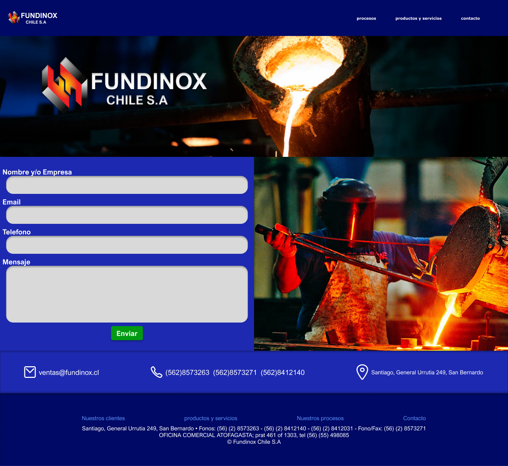
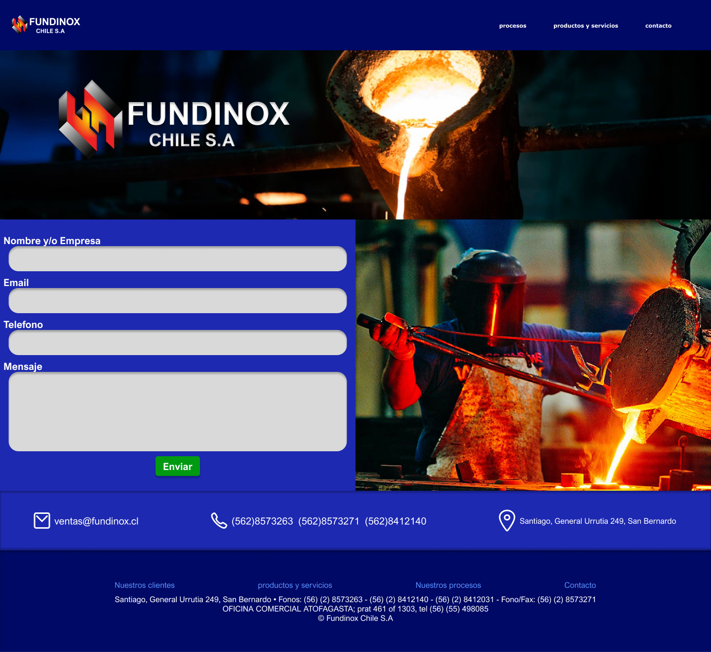

Propuesta de Rediseño
Proyecto de Rediseño - Fundinox chile S.A
Para esta prupuesta rediseñe gran parte de la actual interfaz, tomé en cuenta tanto la identidad de
la empresa y sus procesos. Asi mismo diseñe una interfaz que le diera transmitiera confiabilidad e
intuitividad.
Contenido de la sección Home:
- Clientes:
Presentación de las principales empresas o sectores que confían en
nuestros productos y
servicios.
- Breve explicación de procesos: Resumen conciso de los procedimientos clave
utilizados en la
fabricación y tratamiento de los materiales.
- Vista previa de los tipos de aceros: Muestra representativa de las distintas
variedades de acero
producidas, destacando sus aplicaciones y características.
Para que los usuarios puedan explorar a fondo los Productos y Servicios, ofrecemos una presentación
clara y visualmente atractiva:
- Tipos de fundiciones: Explicamos cada técnica con detalle, desde los materiales utilizados hasta sus
aplicaciones prácticas. Nuestro objetivo es brindar información accesible, permitiendo que
cualquiera, desde expertos hasta quienes recién descubren el mundo de la fundición, comprenda sus
beneficios y diferencias.
- Explicación de piezas y galería de imágenes: No solo describimos cada pieza, sino que compartimos
historias sobre su creación y utilidad. Además, proporcionamos una galería de imágenes para que los
usuarios puedan apreciar los detalles de cada producto, su acabado y su diseño único.
- Acceso a fichas técnicas en PDF: Para quienes necesitan información más técnica, ofrecemos fichas
descargables con todos los datos relevantes: materiales, dimensiones, procesos de fabricación y
recomendaciones de uso.
Queremos que los usuarios cuenten con información precisa y confiable para
tomar decisiones informadas.
 
